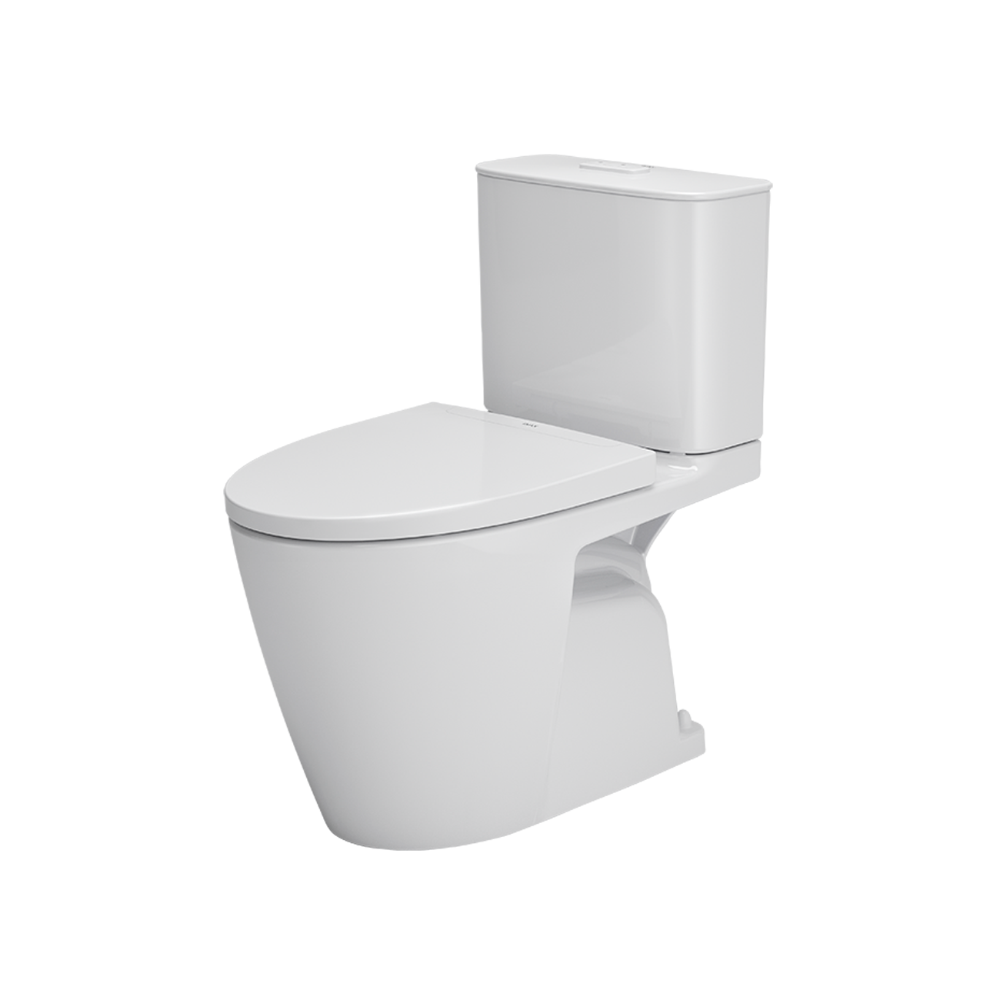
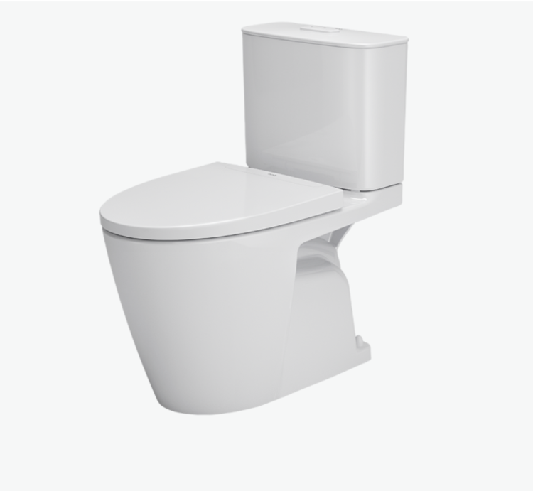
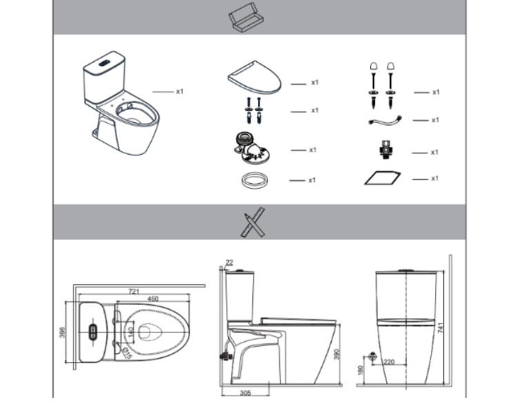

Bồn cầu 2 khối INAX AC-602VN sở hữu thiết kế hiện đại, thanh thoát, với thân bồn liền mạch và các đường nét bo tròn mềm mại, tạo không gian phòng tắm sang trọng và gọn gàng. Nắp ngồi êm ái kết hợp với vành rim trơn láng đầy tinh tế, hỗ trợ khâu vệ sinh trở nên tiện lợi, đơn giản hơn. Sản phẩm có màu trắng hiện đại, kiểu dáng hài hòa, phù hợp với nhiều phong cách nội thất khác nhau.Thiết kế bồn cầu 2 khối AC-602VNThiết kế tổng thể hiện đại, thanh thoát, kết hợp thân bồn liền mạch và các đường cong mềm mại, tạo cảm giác gọn gàng, sang trọng và dễ vệ sinhNắp ngồi CF-602VS được thiết kế êm ái, tạo cảm giác thoải mái tối ưu khi sử dụng.Trang bị vành rim trơn láng liền mạch, giúp hạn chế tình trạng bám bẩn và hỗ trợ vệ sinh nhanh chóng.Kiểu dáng 2 khối, thiết kế két nước và bệ ngồi tách rời, thuận tiện cho việc lắp đặt, bảo trì và vận chuyển.Bồn cầu có màu trắng hài hòa, dễ phối hợp với nhiều phong cách nội thất phòng tắm.Tính năng nổi bật của bồn cầu 2 khối AC-602VNHai mức xả 4.5L/3.0L: Xả đại và xả tiểu siêu tiết kiệm nước, giúp tối ưu hóa hiệu quả sử dụng.Hệ thống xả Powerful Vortex: Hai cửa xả (một cửa xả, một cửa đẩy trợ lực) mạnh mẽ, giúp cuốn trôi mọi chất bẩn và duy trì trạng thái vệ sinh tối ưu.Nắp đóng êm: Giúp giảm tiếng động và nâng cao trải nghiệm người dùng.Vành rim trơn láng: Giúp vệ sinh dễ dàng, hạn chế bám bẩn và vi khuẩn.Bề mặt men sứ Aqua Ceramic: Sáng bóng, chống bám cặn, dễ lau chùi và duy trì độ bền lâu dài.Video giới thiệu công nghệ Aqua Ceramic độc quyền của INAXVideo giới thiệu bồn cầu 2 khối AC-602VNBàn cầu 2 khối INAX AC-602VN có thể kết hợp hài hoà với các mẫu chậu rửa INAX AL-312V, L-312V và AL-345V để tạo sự đồng bộ cho không gian phòng tắm. Những sản phẩm này có cùng chất liệu men sứ cao cấp, sở hữu thiết kế hiện đại, thanh lịch, giúp phòng tắm thêm phần tiện nghi, gọn gàng và đạt giá trị thẩm mỹ cao.Bản vẽ bồn cầu 2 khối AC-602VNBản vẽ bồn cầu 2 khối AC-602VNHướng dẫn lắp đặt bồn cầu 2 khối AC-602VNXem file Hướng dẫn lắp đặt sản phẩm AC-602VNThông số kỹ thuậtChất liệuSứKiểu dángBồn cầu 2 khốiKích thước721 x 398 x 741 (mm)Tính năng & Công nghệ- Hai mức xả 4.5L/3.0L (xả đại/xả tiểu) siêu tiết kiệm nước - Hệ thống xả Powerful Vortex với hai cửa xả mạnh mẽ, loại bỏ mọi chất bẩn. - Nắp đóng êm, thiết kế tối ưu cho cảm giác thoải mái. - Vành rim trơn láng, dễ vệ sinh và hạn chế bám bẩn. - Men sứ Aqua Ceramic giúp bề mặt sáng bóng, chống bám cặn và bám bẩn, dễ vệ sinh.Thương hiệuINAXThiết kế- Nắp ngồi êm ái, được nghiên cứu tối ưu cho trải nghiệm người dùng. - Thân bồn bo tròn mềm mại, liền mạch, dễ vệ sinh. - Vành rim hoàn toàn trơn láng, hạn chế bám bẩn. - Kiểu dáng hiện đại, thanh thoát, phối hợp dễ dàng với nhiều phong cách nội thất phòng tắm. - Két nước và bệ ngồi tách rời, thuận tiện cho lắp đặt, bảo trì và vận chuyển.Màu sắcTrắngKhác- Có thể kết hợp với các mẫu chậu rửa đặt bàn: INAX AL-312V, L-312V và AL-345V. - Hotline tư vấn: 18006633
Bồn cầu 2 khối AC-602VN
Bàn cầu thương hiệu INAX.
Đã cập nhật danh sách yêu thích.
DANH MỤC: Bàn cầu
MÃ SẢN PHẨM: AC-602VN
DEPTH: 398mm
HEIGHT: 741mm
WIDTH: 721mm
Bồn cầu 2 khối INAX AC-602VN sở hữu thiết kế hiện đại, thanh thoát, với thân bồn liền mạch và các đường nét bo tròn mềm mại, tạo không gian phòng tắm sang trọng và gọn gàng. Nắp ngồi êm ái kết hợp với vành rim trơn láng đầy tinh tế, hỗ trợ khâu vệ sinh trở nên tiện lợi, đơn giản hơn. Sản phẩm có màu trắng hiện đại, kiểu dáng hài hòa, phù hợp với nhiều phong cách nội thất khác nhau.Thiết kế bồn cầu 2 khối AC-602VNThiết kế tổng thể hiện đại, thanh thoát, kết hợp thân bồn liền mạch và các đường cong mềm mại, tạo cảm giác gọn gàng, sang trọng và dễ vệ sinhNắp ngồi CF-602VS được thiết kế êm ái, tạo cảm giác thoải mái tối ưu khi sử dụng.Trang bị vành rim trơn láng liền mạch, giúp hạn chế tình trạng bám bẩn và hỗ trợ vệ sinh nhanh chóng.Kiểu dáng 2 khối, thiết kế két nước và bệ ngồi tách rời, thuận tiện cho việc lắp đặt, bảo trì và vận chuyển.Bồn cầu có màu trắng hài hòa, dễ phối hợp với nhiều phong cách nội thất phòng tắm.Tính năng nổi bật của bồn cầu 2 khối AC-602VNHai mức xả 4.5L/3.0L: Xả đại và xả tiểu siêu tiết kiệm nước, giúp tối ưu hóa hiệu quả sử dụng.Hệ thống xả Powerful Vortex: Hai cửa xả (một cửa xả, một cửa đẩy trợ lực) mạnh mẽ, giúp cuốn trôi mọi chất bẩn và duy trì trạng thái vệ sinh tối ưu.Nắp đóng êm: Giúp giảm tiếng động và nâng cao trải nghiệm người dùng.Vành rim trơn láng: Giúp vệ sinh dễ dàng, hạn chế bám bẩn và vi khuẩn.Bề mặt men sứ Aqua Ceramic: Sáng bóng, chống bám cặn, dễ lau chùi và duy trì độ bền lâu dài.Video giới thiệu công nghệ Aqua Ceramic độc quyền của INAXVideo giới thiệu bồn cầu 2 khối AC-602VNBàn cầu 2 khối INAX AC-602VN có thể kết hợp hài hoà với các mẫu chậu rửa INAX AL-312V, L-312V và AL-345V để tạo sự đồng bộ cho không gian phòng tắm. Những sản phẩm này có cùng chất liệu men sứ cao cấp, sở hữu thiết kế hiện đại, thanh lịch, giúp phòng tắm thêm phần tiện nghi, gọn gàng và đạt giá trị thẩm mỹ cao.Bản vẽ bồn cầu 2 khối AC-602VNBản vẽ bồn cầu 2 khối AC-602VNHướng dẫn lắp đặt bồn cầu 2 khối AC-602VNXem file Hướng dẫn lắp đặt sản phẩm AC-602VNThông số kỹ thuậtChất liệuSứKiểu dángBồn cầu 2 khốiKích thước721 x 398 x 741 (mm)Tính năng & Công nghệ- Hai mức xả 4.5L/3.0L (xả đại/xả tiểu) siêu tiết kiệm nước - Hệ thống xả Powerful Vortex với hai cửa xả mạnh mẽ, loại bỏ mọi chất bẩn. - Nắp đóng êm, thiết kế tối ưu cho cảm giác thoải mái. - Vành rim trơn láng, dễ vệ sinh và hạn chế bám bẩn. - Men sứ Aqua Ceramic giúp bề mặt sáng bóng, chống bám cặn và bám bẩn, dễ vệ sinh.Thương hiệuINAXThiết kế- Nắp ngồi êm ái, được nghiên cứu tối ưu cho trải nghiệm người dùng. - Thân bồn bo tròn mềm mại, liền mạch, dễ vệ sinh. - Vành rim hoàn toàn trơn láng, hạn chế bám bẩn. - Kiểu dáng hiện đại, thanh thoát, phối hợp dễ dàng với nhiều phong cách nội thất phòng tắm. - Két nước và bệ ngồi tách rời, thuận tiện cho lắp đặt, bảo trì và vận chuyển.Màu sắcTrắngKhác- Có thể kết hợp với các mẫu chậu rửa đặt bàn: INAX AL-312V, L-312V và AL-345V. - Hotline tư vấn: 18006633
DANH MỤC: Bàn cầu
MÃ SẢN PHẨM: AC-602VN
DEPTH: 398mm
HEIGHT: 741mm
WIDTH: 721mm